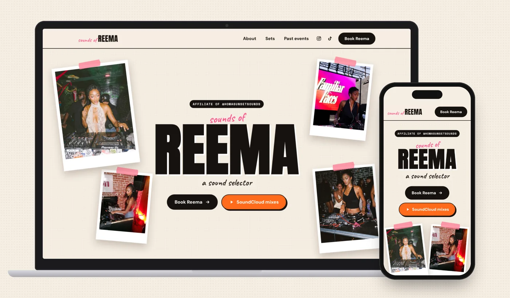
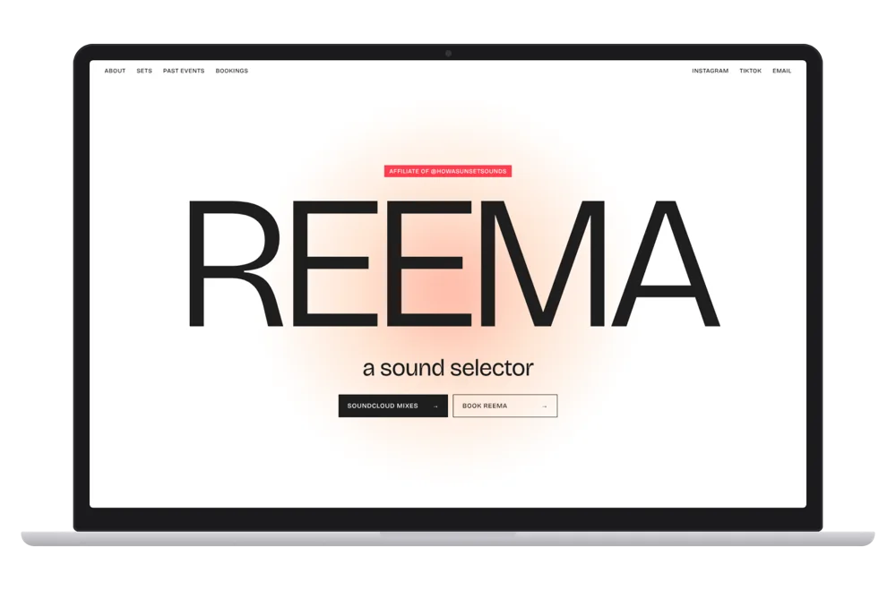
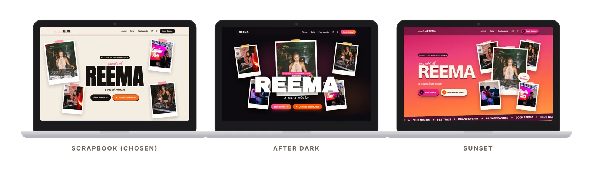
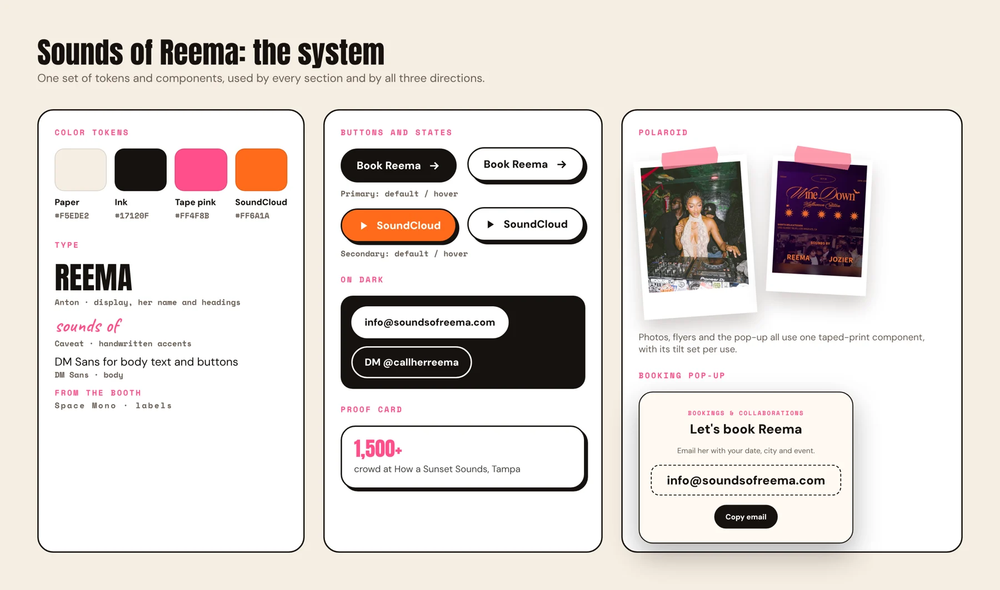
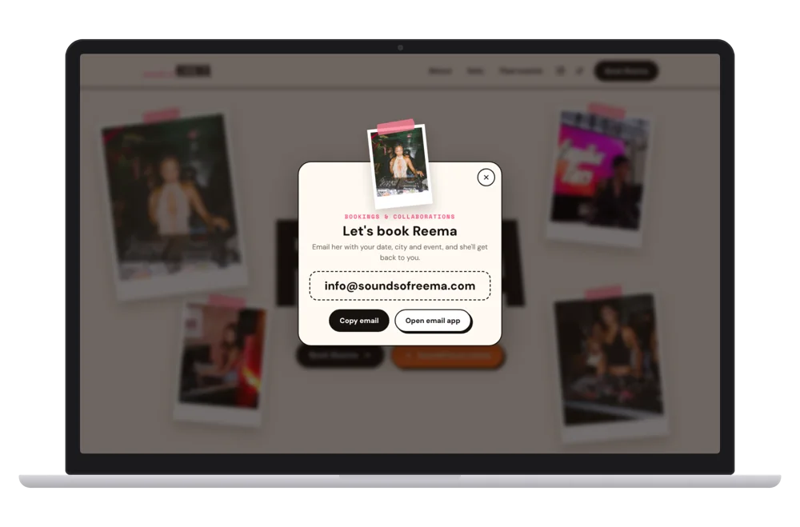
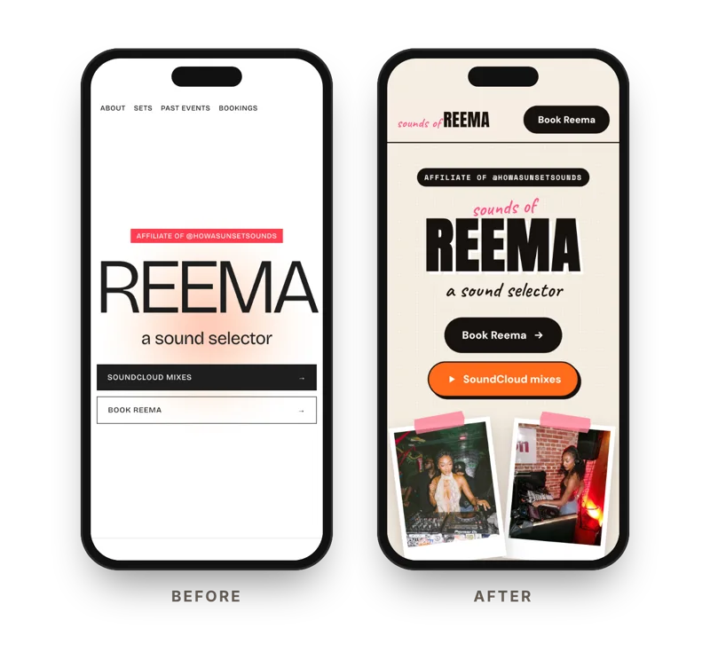
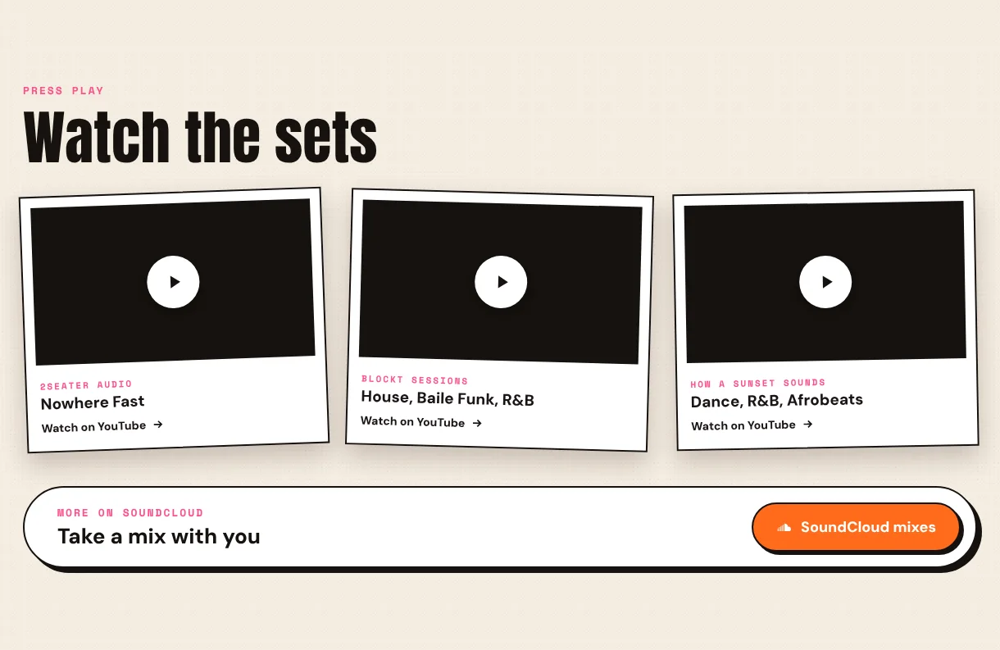
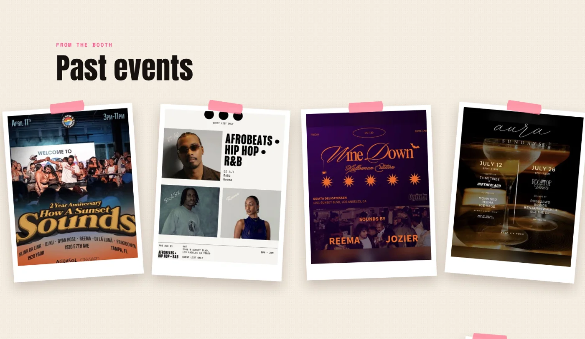
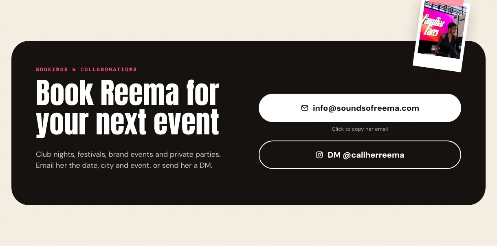

Bookers
Promoters, venues, brands and private hosts. Many find her through Instagram or TikTok, often on a phone. They judge the vibe in seconds, want to hear a set, then need a fast way to reach her.
01 Project introduction
Reema is a Los Angeles DJ, “a sound selector”, and an affiliate of How a Sunset Sounds. She reached out because she wanted more bookings. I owned the redesign end to end: auditing her site, mapping how bookers reach her, building a small design system, and shipping a working, responsive prototype with a plan to measure the result.

Her site was where bookers decided, but it hid what they decide on: no photos on the first screen, small links, and a Book button that disappeared once you scrolled.
Research, journey mapping, three design directions, the design system, the front-end build, testing across screen sizes, and the launch measurement plan.
Measured on the same screens: 0 → 4 photos on the first screen, a Book button visible on every scroll, and header links 42% larger. Booking inquiries are tracked from launch.
02 The problem
Bookings are Reema’s income, and her website is where a booker decides whether to reach out. The site had the right content but didn’t move anyone toward booking.
Promoters, venues, brands and private hosts. Many find her through Instagram or TikTok, often on a phone. They judge the vibe in seconds, want to hear a set, then need a fast way to reach her.
Wants more bookings without changing how she works: bookings arrive by email and Instagram DM, and she updates her own links, flyers and gigs.
03 My role & approach
Audited her live site, inventoried her content, and walked the booking path on desktop and phone.
Mapped the booker’s journey, named where it broke, and set the success measures.
Explored three directions on her real content, then built the chosen one on a shared design system.
Measured the redesign against the old site on the same screens, and refined it round by round.
04 Research & insights
| Stage | Booker’s goal | On the old site | Opportunity |
|---|---|---|---|
| 1 · Arrive | Land from her Instagram or TikTok | Her name in large type on white, with no photos on the first screen | Lead with her real set photos |
| 2 · Feel the vibe | See her play, see the crowd | The first photo sat below the fold, after the bio | Show the crowd and the decks immediately |
| 3 · Hear her | Play a set or a mix | Sets were there, but the SoundCloud button was a plain square | Make listening an obvious, inviting action |
| 4 · Trust her | Check she can carry a room | Her strongest numbers sat inside long bio paragraphs | Pull proof out where it’s seen |
| 5 · Reach out | Contact her fast, from wherever they are | Book Reema was at the top only; mid-page, no way to book was on screen | Keep booking one click away on every scroll |

05 Design decisions

What the research showedHer photos are the pitch.
What I designedTaped polaroids of her sets frame “sounds of REEMA”, so the first screen shows the crowd, the decks and her before any copy.
What the research showedThe calls to action blended in.
What I designedHeader links at 17px bold, and chunky rounded Book Reema and SoundCloud buttons, 60px tall, in the hero and the header.
What the research showedHer proof was buried.
What I designedThree numbers from her bio, 1,500+, 300+ and 4 cities, pulled out as cards beside her story.
What the research showedBooking disappeared on scroll.
What I designedA header that stays on screen with a Book Reema button. Every Book button opens one pop-up with her email and a Copy email button.
Pink is her brand, but a pink, playful Book button read as less serious. The Book button is solid black, and pink stays in accents like the tape and labels.
A booking form looks thorough, but needs a server and would change how she works. Two actions match her real workflow: copy her email, or DM her.
Embedded YouTube players add weight and don’t play everywhere. Each set is a card that opens on YouTube, so it always works.
05 Design decisions
I built the site on one content model and a small design system, so every section and all three directions share the same parts. Reema’s content lives in one place; the components and the theme decide how it looks.
Her bio, proof points, sets, 17 flyers and links, written once.
Polaroid, buttons with states, proof card, booking pop-up, flyer strip.
Color and type tokens plus a hero layout. Each direction is a theme over the same content and components.
Responsive rules for phone, tablet and desktop, tested from 390px to 1920px.

05 Design decisions
I made each decision from side-by-side previews on desktop and phone, and changed whatever got in the way of booking.
BeforeA Book button with a pink drop shadow: fun, but it read as less serious.
AfterA solid black Book button that turns white with a black shadow on hover.
BeforeA booking form with seven fields at the bottom of the page.
AfterTwo actions that match how she takes bookings: copy her email, or DM her on Instagram.
BeforeFlyers too small to read the event names.
AfterFlyers about 40% larger, chosen from a side-by-side comparison of two sizes.
BeforeA photo crowded the “R” of her name.
AfterPhotos placed so her name stays clear at every width, with the strongest shot enlarged.
06 Final experience
Try it yourself: the prototype is live, with her real photos, sets and flyers, and works on desktop and phone.
Her email in large type, a Copy email button that confirms with “Copied!”, and a way to open an email app. It’s the same pop-up from the header, the hero and the booking card.


Many visits start from her socials on a phone. On mobile, her name and both buttons come first, and the Book button stays in the header as you scroll.



07 Outcomes & reflection
| Metric | Why it matters | How it’s measured | Compared with |
|---|---|---|---|
| Booking inquiries per month | The business goal | Emails and Instagram DMs that ask about a booking | The 3 months before launch |
| Booking actions per visit | Shows whether visitors move toward booking | Clicks on Book Reema, Copy email and DM, divided by visits | A baseline from the first weeks |
| Listening | A step toward booking | Clicks to SoundCloud and YouTube sets | A baseline from the first weeks |
For a creative, the photos are the pitch, and the booking path is the product. Treating a personal site as a conversion problem, with a journey, measures and a system behind it, kept every decision tied to the goal instead of to taste.
Healthy HandParaillelUT Health X CLIThe Helper BeesGeisingerTandemNetflix Tudum Case Study